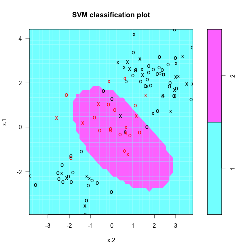

This Data Product provides the user a way to explore the effects of gamma and cost parameters on the Support Vector Machine model for prediction. Below is a classification plot of two gaussian distributed population differing in their mean. The red points belong to population 2. Gamma = 1 Cost = 1
